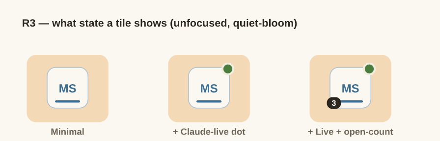

ResearchENH-182 · D9
Duo · 2026-05-25 · left, Slack-style rail
Scope. You picked the left, Slack-style rail
for the project filter (ENH-182 §5 / Decision 9). This study locks the two
things that decision left open: (1) a project color system
that harmonizes with Atelier and won't clash with the burnt-orange app
accent, and (2) the visual treatment of the rail tiles —
four options compared live, with a recommendation. Decide as you read; Copy
decisions at the bottom. No code — design artifact.
Recommendation
Color system: a 6-hue muted "studio" palette (Pine · Harbor ·
Iris · Plum · Rose · Moss) — all mid-value, moderate-chroma, evenly
spaced around the wheel but deliberately skipping the orange/amber
band so no project ever reads as the app accent. Assigned
hash-stable per project root (same folder → same color, always),
with manual override.
Tile style: B — "quiet bloom." ✓ LOCKED (2026-05-25). Every tile
shows its color quietly (colored initials + a thin color underline) so you
can scan the rail; the focused project blooms to a full color fill
with the Slack-style white left notch. Respects Atelier's restraint while
keeping color identity legible.
v1 state on a tile: identity + selection only, plus an optional
small "Claude is live here" dot. Defer tab-count badges.
1 · The color system
The hard constraint is Atelier itself: a warm cream paper (#fbf8f1),
warm near-black ink, and a single saturated burnt-orange accent
(#c46a1c) that already means "active / primary action" across the
app. Project colors therefore have to:
Skip the orange/amber band (~hue 15°–55°) — otherwise a project
tile reads as "the accent," and the whole rail fights the app's existing
color language.
Stay muted & consistent — moderate chroma, mid lightness, so
six of them sit together as one calm family rather than a confetti of
saturated dots on cream.
Keep white initials legible — each hue is dark enough that bold
white initials clear large-text contrast (≥ 4.3:1).
Reserved — not a project color. Burnt orange #c46a1c
stays the app accent (selection, primary buttons, focus rings). No project
is ever assigned an orange/amber hue, by rule.
The palette — 6 muted hues, evenly spaced (orange band omitted)
Each card: full tile (white initials), three background tints (10% / 22% / 40% over paper — for focus chips, soft fills, hovers), and the dot used in tab chips + the navigator.
Assignment & scaling past 6
Hash-stable. A project's color = hash(projectRoot) % 6.
The same folder always gets the same color across sessions and machines —
no flicker, no "why did it change." Let the user override per project.
Past 6 projects — rotate shade variants of the same six
(a ~12% darker "deep" tone) before introducing any new hue. Keeps the
family tight and still avoids the orange band. (6 hues × 2 shades = 12.)
Color is a cue, never the only signal. Initials carry identity for
color-blind users; color is reinforcement. (Pine/Harbor and Iris/Plum are
the closest pairs — initials disambiguate them.)
2 · Tile style — four options (live)
Click the tiles. All four are the same left, Slack-style rail; they differ in
how loudly color is expressed and how the focused project is marked. Hover a
tile for its name flyout.
A · Painted
All
WSWidget Store
MSMarketing Site
AGAPI Gateway
DSDesign System
Every tile fully painted. Maximum glanceability by color; loudest against cream. Focused = full saturation + scale + white notch.
B · Quiet bloom rec
All
WSWidget Store
MSMarketing Site
AGAPI Gateway
DSDesign System
Quiet until focused. Colored initials + thin underline identify each; the focused project blooms to full fill + white notch. Calmest fit with Atelier.
C · Color-bar
All
WSWidget Store
MSMarketing Site
AGAPI Gateway
DSDesign System
Color contained to a stripe. Neutral tiles with a left color bar; focused = full wash + white bar. Tidy; closest to Slack's selected-workspace bar.
D · Dot-minimal
All
WSWidget Store
MSMarketing Site
AGAPI Gateway
DSDesign System
Color as a whisper. Ink initials + a corner dot; focused = soft fill + enlarged dot. Most Atelier-pure, least scannable by color.
Why B is recommended
Color is present on every tile (scannable) but muted until you focus — matches Atelier's "quiet surface, one loud moment" ethos.
The bloom-to-fill gives focus a satisfying, unmistakable state change that pairs with the §5 filter transition.
Degrades gracefully to 6+ projects without becoming a wall of saturated squares (the risk with A).
When to pick another
A if you want maximum at-a-glance color sorting and don't mind a louder rail.
C if you want the most literal Slack feel and the tidiest neutral tiles.
D if color should stay a near-invisible accent and initials do all the work.
Beyond identity + selection, the tile is a natural place to surface a little
Duo-specific state. The recommendation is to keep v1 minimal and add the rest
only if they earn their keep.
MS3
Identity — initials (first two words) + project color. v1
Selection — full-color bloom + white left notch (focused project). v1
Claude live here — small green dot, top-right, when a claude session is running in any of that project's terminals (reuses claudePresence). v1-optional
Open-item count — small badge, bottom-left (how many tabs belong to the project). Defer — risks Slack-unread clutter.
Git-dirty — a tiny warm tick if the project's repo has uncommitted changes. Defer.
Decision R1 · tile style · ✓ LOCKED
Which rail tile treatment?
Locked 2026-05-25 → B (Quiet bloom). The other options are kept below for the record. All are the same left Slack-style rail; they differ in color loudness + focus marking.
Decision R2 · color assignment · ✓ LOCKED
How is a project's color chosen?
From the 6-hue palette above. Locked 2026-05-25 → hash-stable + override.

The three states weighed for R3, on unfocused quiet-bloom tiles.
Minimal (left) was locked for v1; the Claude-live dot and the open-count
badge are deferred.
Part of ENH-182 (project-centric UX). This study resolves the
visual half of Decision 9; the parent playground —
docs/research/project-centric-ux.html — holds the full set of
filter-layer decisions.